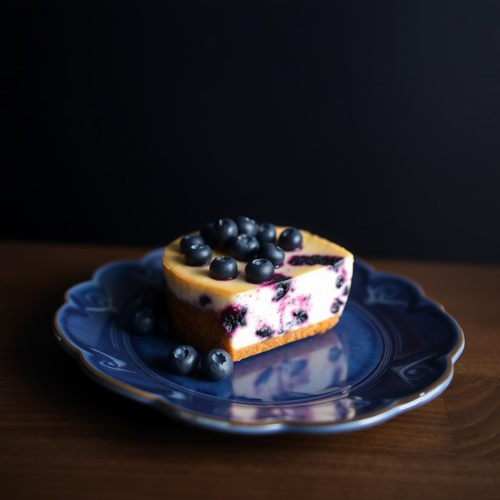
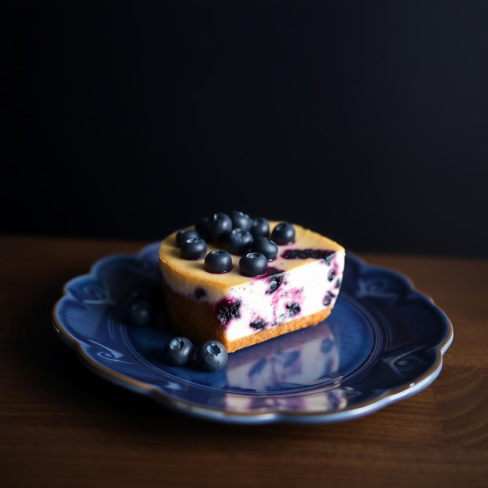

Использование
Превратите свои идеи в реальность


 



Преимущества
Satellite AI — ваш лучший выбор


Возможности
Больше инструментов для работы с фото

Удаление и замена фона
Удалите фон с изображения или замените его на любой другой, который вам нравится

Создание логотипов
Генерируйте продающие логотипы для вашего бренда
Генерация аватарок
Создавайте уникальный аватар в нужном стиле

Улучшение качества
Повышайте резкость и четкость изображений
Image to Image
Преобразуйте существующие изображения, изменяя их стиль, добавляя новые детали и придавая им совершенно новый смысл и уникальность

Дорисовка фото и изображений
Добавляйте новые элементы на изображения для улучшения композиции и стиля


Замена лица на фото
Меняйте лица на фото с высоким уровнем точности и естественности с помощью современных технологий обработки изображений

Коллажи из фото
Объединяйте лучшие моменты жизни в креативные коллажи

Объединение фото
В один клик объединяйте несколько фотографий в одно изображение. Это отличный способ создать уникальные и креативные фотографии для любых целей
Удаление и замена фона
Удалите фон с изображения или замените его другой
Создание логотипов
Генерируйте продающие логотипы для вашего бренда
Улучшение качества
Повышайте резкость и четкость изображений
Дорисовка фото и изображений
Добавляйте новые элементы на изображения для улучшения композиции и стиля
Замена лица на фото
Меняйте лица на фото с высоким уровнем точности и естественности с помощью современных технологий обработки изображений
Коллажи из фото
Объединяйте лучшие моменты жизни в креативные коллажи

Объединение фото
В один клик объединяйте несколько фотографий в одно изображение. Это отличный способ создать уникальные и креативные фотографии для любых целей
Кому подойдёт
Незаменимый помощник для каждого

Маркетологи
Преподователи
Фотографы
SMM-специалисты
Дизайнеры
Копирайтеры
Студенты
PR-менеджер

Художники

Блогеры

Фрилансеры
Журналисты
Маркетологи
Преподователи
Фотографы
SMM-специалисты
Дизайнеры
Копирайтеры
Студенты
PR-менеджер
Художники
Блогеры
Фрилансеры
Журналисты
Отзывы
Миллионы пользователей выбирают нас


FAQ
Поможем разобраться
Satellite AI позволяет:
- Создавать изображения по описанию (генерация изображений).
- Удалять фон с фотографий.
- Улучшать качество фотографий (увеличение разрешения, улучшение чёткости).
- Применять фильтры и стили к изображениям.
- Генерировать визуальные эффекты и композиции по заданным параметрам.